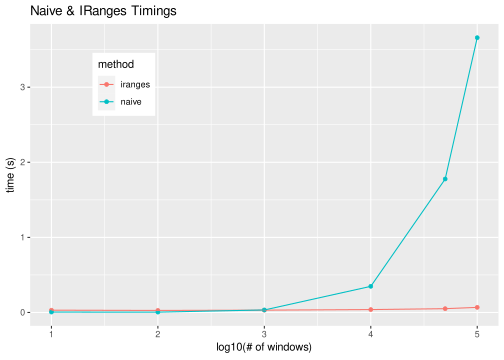
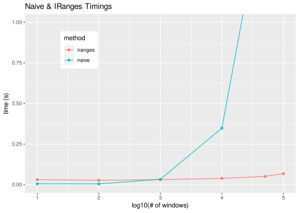

I wanted to make use of IRanges awesome interval logic, but for non-integer data.
R
iranges
development
programming
Author
Robert M Flight
Published
June 23, 2018
TL;DR
The IRanges package implements interval algebra, and is very fast for finding overlaps of two ranges. If you have non-integer data, multiply values by a large constant factor and round them. The constant depends on how much accuracy you need.
IRanges??
IRanges is a bioconductor package for interval algebra of integer ranges. It is used extensively in the GenomicRanges package for finding overlaps between various genomic features. For genomic features, integers make sense, because one cannot have fractional base locations.
However, IRanges uses red-black trees as its data structure, which provide very fast searches of overlaps. This makes it very attractive for any problem that involves overlapping ranges.
Motivation
My motivation comes from mass-spectrometry data, where I want to count the number of raw data points and / or the number of peaks in a large number of M/Z windows. Large here means on the order of 1,000,000 M/Z windows.
Generating the windows is not hard, but searching the list of points / peaks for which ones are within the bounds of a window takes a really long time. Long enough that I needed some other method.
IRanges to the Rescue!
So my idea was to use IRanges. But there is a problem, IRanges is for integer ranges. How do we use this for non-integer data? Simple, multiply and round the fractional numbers to generate integers.
It turns out that multiplying our mass-spec data by 20,000 gives us differences down to the 0.00005 place, which is more than enough accuracy for the size of the windows we are interested in. If needed, IRanges can handle 1600 * 1e6, but currently will crash at 1600 * 1e7.
How Fast Is It?
Lets actually test differences in speed by counting how many overlapping points there are.
I have some example data with 3447542 windows, and 991816 points. We will count how many point there are in each window using the below functions, with differing number of windows.
all_times <-data.frame(size =rep(sample_sizes, 2),time =c(iranges_times, naive_times),method =rep(c("iranges", "naive"), each =6))p <-ggplot(all_times, aes(x =log10(size), y = time, color = method)) +geom_point() +geom_line() +labs(y ="time (s)", x ="log10(# of windows)", title ="Naive & IRanges Timings") +theme(legend.position =c(0.2, 0.8))p

p +coord_cartesian(ylim =c(0, 1))

As the two figures show, the naive solution, while a little faster under 1000 regions, is quickly outperformed by IRanges, whose time increases much more slowly.
![]()